Keine Panik, wir schaffen das!
- Wir installieren deine App jetzt über einen kleinen Umweg. Das sieht auf den ersten Blick nach viel aus, ist aber eigentlich ganz leicht.
- Lass dich nicht stressen. Geh jeden Schritt ganz langsam und in Ruhe durch. Klicke erst auf „Weiter“, wenn dein Fernseher genau das anzeigt wie auf unseren Bildern. Du schaffst das!
- Solltest du an einem Punkt hängenbleiben und absolut nicht mehr weiterwissen: Mach ein Foto von deinem Fernseher und schicke es mir. Aber bitte wirklich nur, wenn du komplett auf dem Schlauch stehst! 😉
Schritt 1: Welches Gerät nutzt du?
Vorbereitung: Platz schaffen!
- Bevor wir die neue Version installieren, müssen wir die alte löschen. Drücke die Haus-Taste (Home-Button) auf deiner Fernbedienung.
- Navigiere auf der Startseite ganz nach rechts zum Zahnrad-Symbol (Einstellungen).
- Klicke auf Applikationen (oder „Apps“) und dann auf Installierte Apps verwalten.
- Suche in der Liste nach deiner alten Tivim-App und klicke darauf.
- Wähle Deinstallieren und bestätige es.
- Drücke danach wieder die Haus-Taste, um zurück zur Startseite zu gehen. Du bist jetzt zu 100 % startklar!
Schritt 3: Welche Version möchtest du installieren?
Schritt 4: Suche öffnen
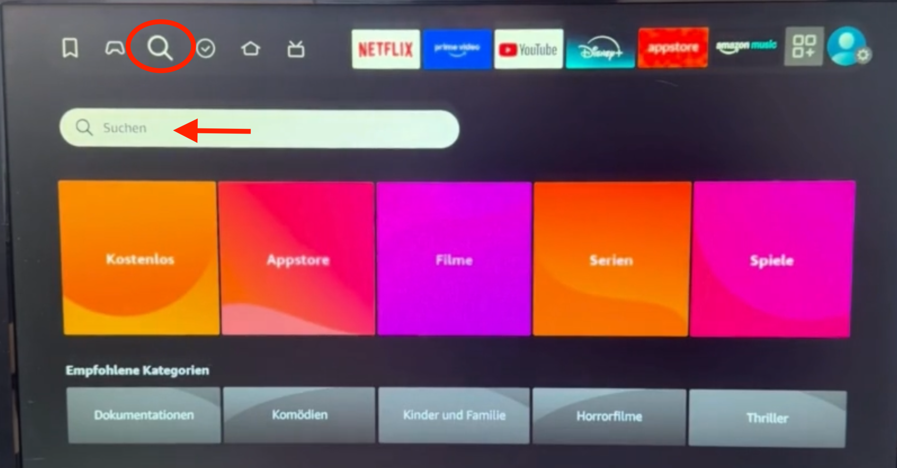
- Gehe auf Suchen.
Schritt 5: Downloader suchen
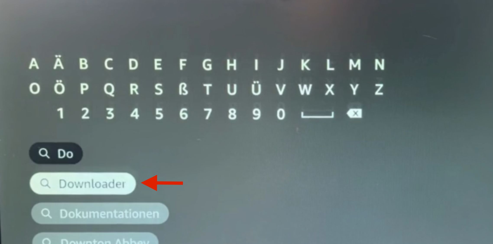
- Tippe Downloader ein und klicke auf den Vorschlag.
Schritt 6: App installieren
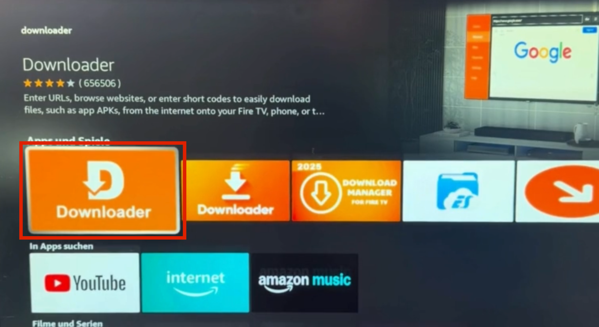
- Klicke auf die orange App.
- Lade sie herunter und öffne sie.
Schritt 7: Downloader einrichten
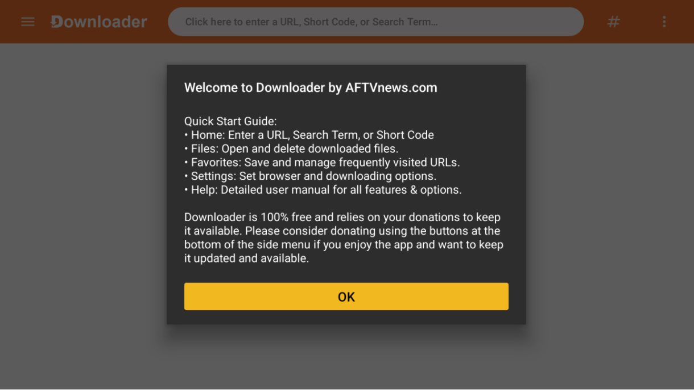
- Beim ersten Öffnen fragt die App nach Erlaubnis für Medien/Dateien. Klicke unbedingt auf Zulassen.
- Wenn diese Willkommens-Meldung kommt, klicke einfach auf OK.
Schritt 8: Den Code eingeben
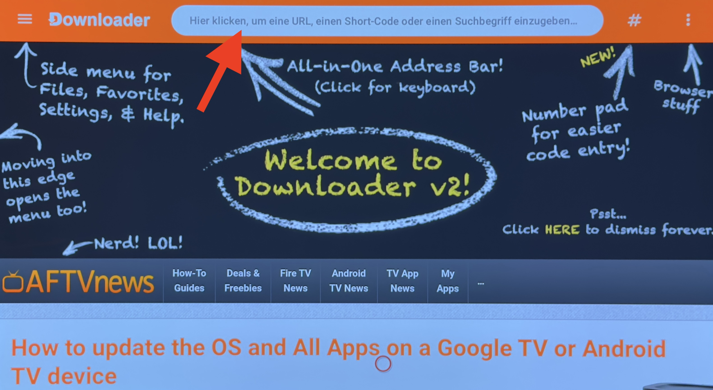
- Navigiere mit der Fernbedienung nach ganz oben in das lange Eingabefeld (siehe Bild).
- Klicke einmal auf die OK-Taste, damit sich die Tastatur öffnet.
- Lösche alles, was dort steht, und gib diesen Code ein: —
- Klicke auf der Tastatur auf Los! .
Schritt 9: Kurz warten
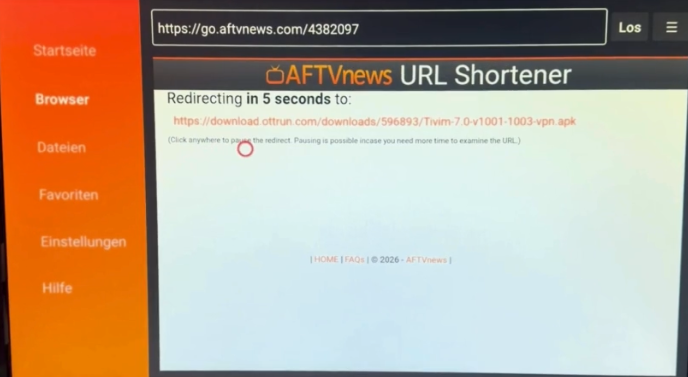
- Du siehst jetzt diese Seite mit einem Countdown.
- Warte einfach einen Moment. Du musst hier ggf nur nochmal auf zustimmen klicken.
- Die Seite leitet dich nach wenigen Sekunden automatisch weiter.
Schritt 10: Download starten
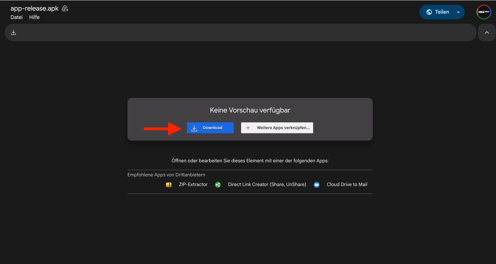
- Du landest jetzt auf einer dunklen Google-Drive-Seite.
- Navigiere mit der Fernbedienung in die Mitte des Bildschirms.
- Klicke auf den blauen Button Download.
Schritt 11: Trotzdem herunterladen
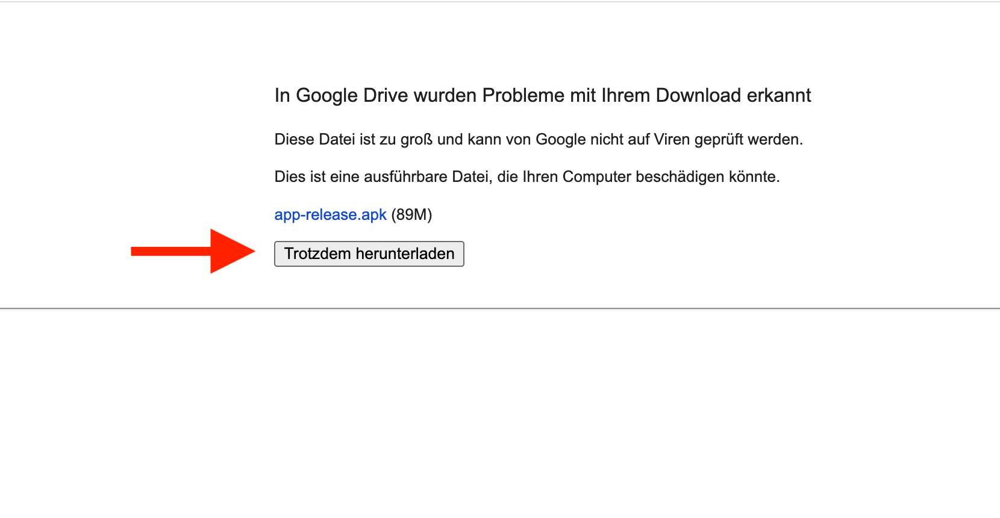
- Jetzt wird der Bildschirm hell und zeigt eine Warnung an. Keine Panik – das ist bei TV-Apps über Google Drive völlig normal! Die Datei ist zu 100 % sicher.
- Navigiere nach unten zu dem kleinen, grauen Button.
- Klicke auf Trotzdem herunterladen.
- Jetzt startet der eigentliche Download der App (du siehst einen Fortschrittsbalken).
Schritt 12: Was siehst du jetzt?
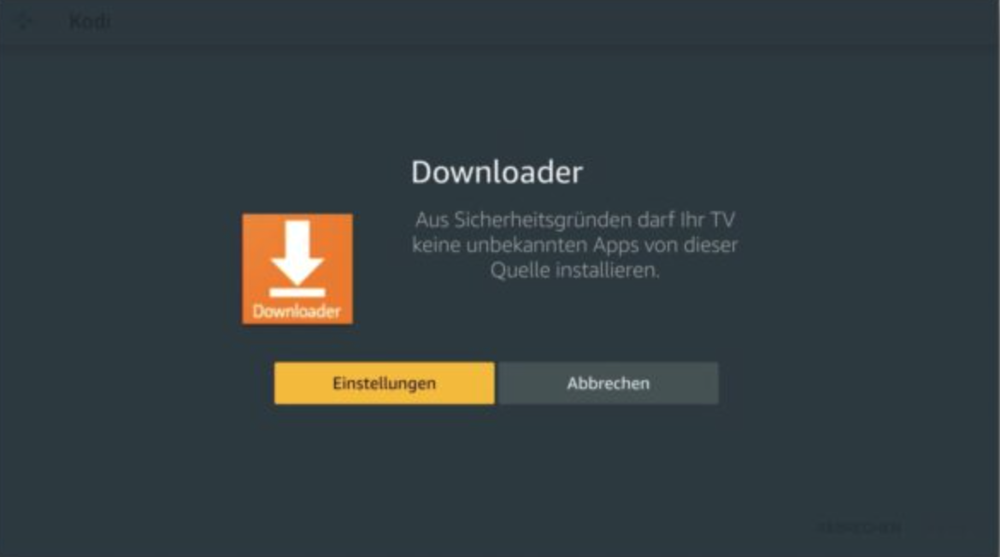
- Wenn der Download fertig ist, passiert eines von zwei Dingen.
- Fall A: Die Installation startet direkt (ein Fenster mit „Installieren“ unten rechts erscheint).
- Fall B: Du siehst genau diese Sicherheitswarnung wie auf dem Bild.
Schritt 13: Die Geräte-Info öffnen
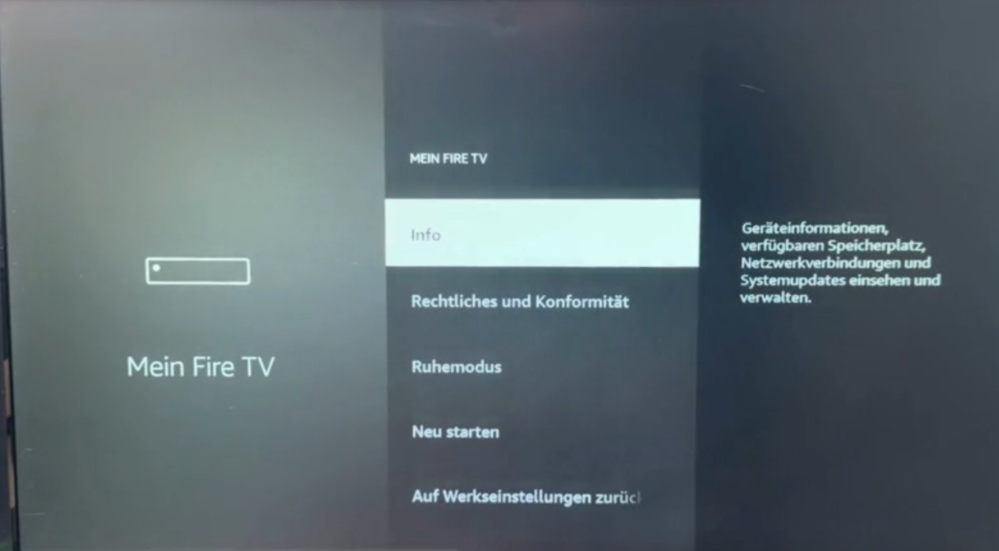
- Du bist jetzt automatisch in den Einstellungen deines Fire TVs gelandet.
- Wähle direkt den ersten Punkt Info aus und klicke darauf.
Schritt 14: Entwickler werden
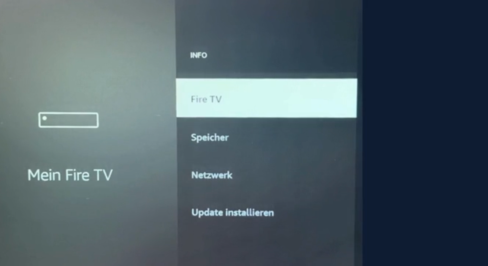
- Wähle den obersten Punkt aus (oft heißt er Fire TV oder Fire TV Stick 4K).
- Jetzt kommt der Trick: Drücke 7-mal ganz schnell hintereinander die OK-Taste (in der Mitte) auf deiner Fernbedienung.
- Mach das so lange, bis unten am Bildschirmrand die kleine Meldung erscheint: „Nicht nötig, du bist bereits ein Entwickler“.
Schritt 15: Das versteckte Menü
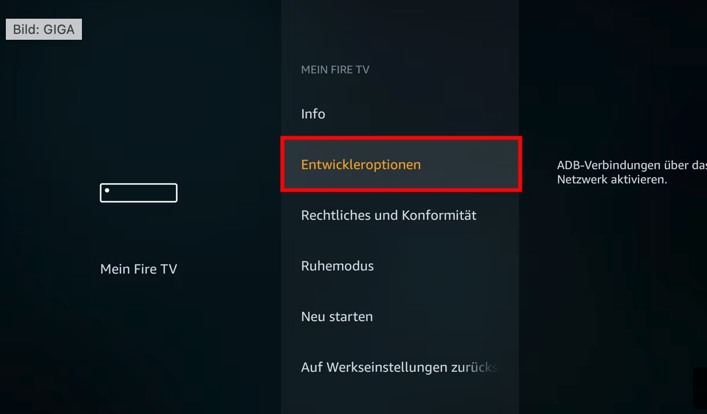
(Hinweis: Bild nur symbolisch mit xc)
- Drücke jetzt genau 1-mal die Zurück-Taste (die Taste mit dem gebogenen Pfeil) auf deiner Fernbedienung.
- Du bist jetzt wieder im vorherigen Menü. Direkt unter „Info“ ist nun wie von Zauberhand der neue Punkt Entwickleroptionen erschienen.
- Klicke auf Entwickleroptionen.
Schritt 16: Installation erlauben
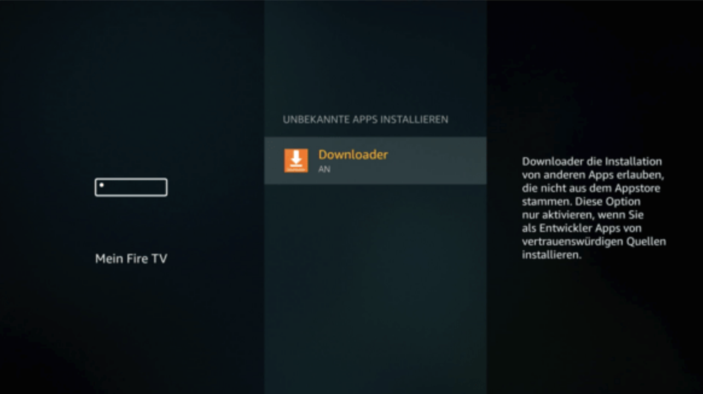
(Hinweis: Bild nur symbolisch mit xc)
- Gehe zu Entwickleroptionen.
- Öffne Unbekannte Apps.
- Stelle Downloader auf AN.
- Drücke 2× Zurück.
- Du solltest im Downloader landen.
Schritt 17: Zurück im Downloader
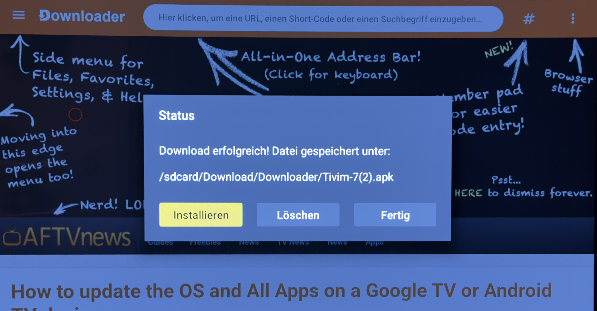
- Du bist jetzt automatisch wieder im Downloader und siehst dieses Fenster.
- Klicke unten links auf den gelben Button Installieren.
Schritt 18: Die finale Installation
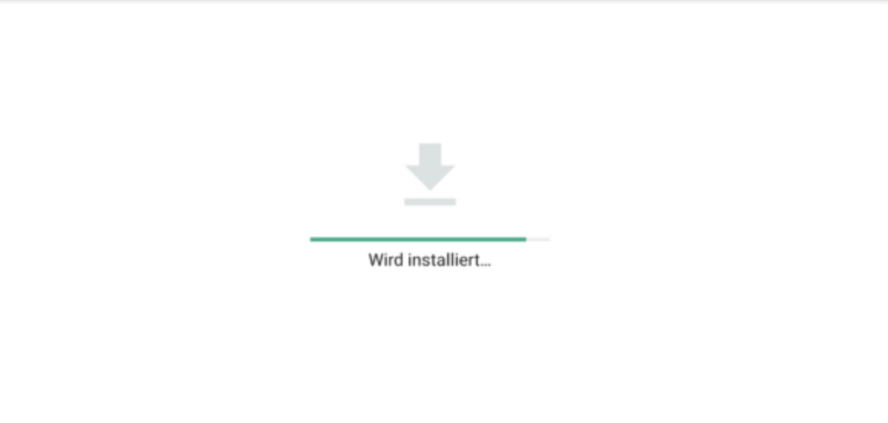
- Jetzt öffnet sich der Installationsbildschirm von Fire TV.
- Klicke auf INSTALLIEREN
- Warte kurz, bis die Meldung kommt, dass die App installiert wurde.
- Klicke danach auf FERTIG (nicht auf Öffnen).
- Drücke jetzt die Haus-Taste (Home-Button) auf deiner Fernbedienung, um ganz zurück zur Startseite zu gehen.
Schritt 19: Wo sind meine Apps?
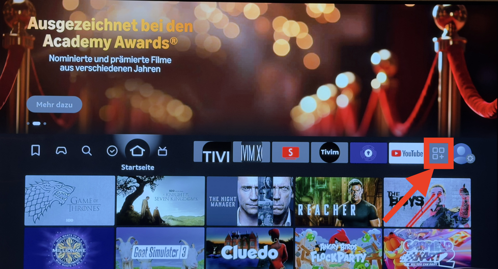
- Du bist jetzt wieder auf der Startseite deines Fire TVs.
- Navigiere in der mittleren Leiste ganz nach rechts zu dem Symbol mit den drei kleinen Kacheln und dem Plus (direkt links neben dem Zahnrad).
- Klicke einmal auf dieses Symbol.
Schritt 20: Los geht's!
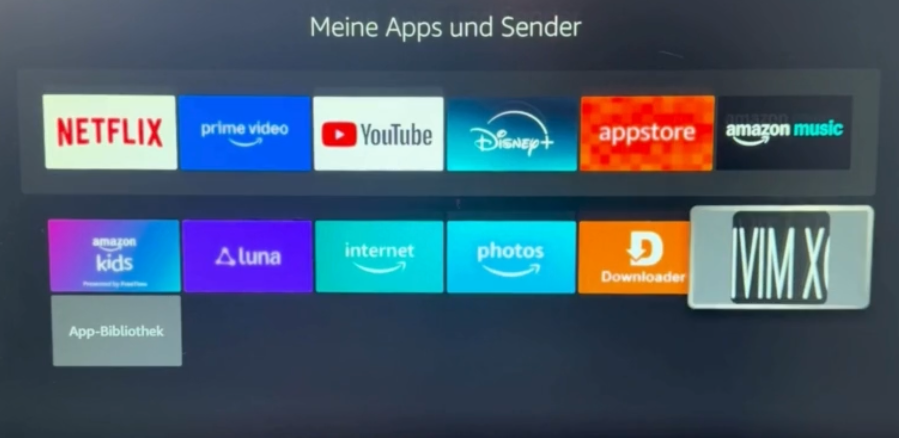
- Du siehst jetzt eine Liste mit all deinen Apps.
- Scrolle ganz nach unten.
- Dort findest du deine neue Tivim-App!
- Klicke sie an, um sie zu öffnen. (Tipp: Wenn du auf der Fernbedienung die Menü-Taste mit den 3 Strichen drückst, kannst du die App auch nach ganz vorne verschieben!)
Schritt 19: Los geht's mit Pro!
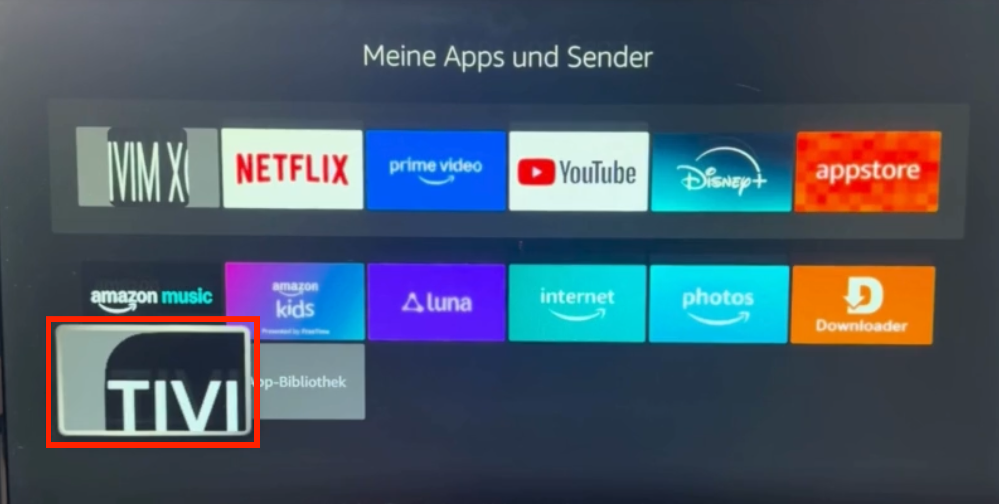
- Du siehst jetzt eine Liste mit all deinen Apps.
- Scrolle ganz nach unten.
- Dort findest du deine neue App (siehe rote Markierung im Bild).
- Klicke sie an, um sie zu öffnen. (Tipp: Mit der Menü-Taste auf deiner Fernbedienung kannst du die App nach ganz vorne verschieben!)
Schritt 20: Der Startbildschirm
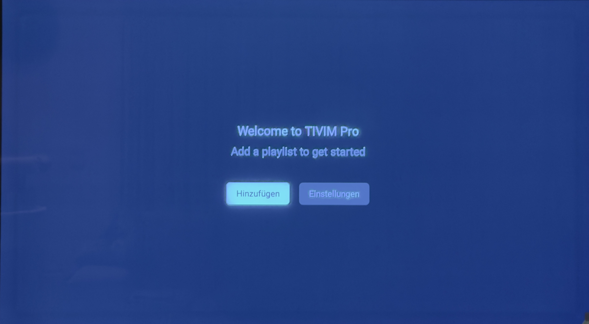
- Du bist jetzt in der Tivim Pro App!
- Klicke auf den linken, leuchtenden Button Hinzufügen.
Schritt 21: Service bestätigen
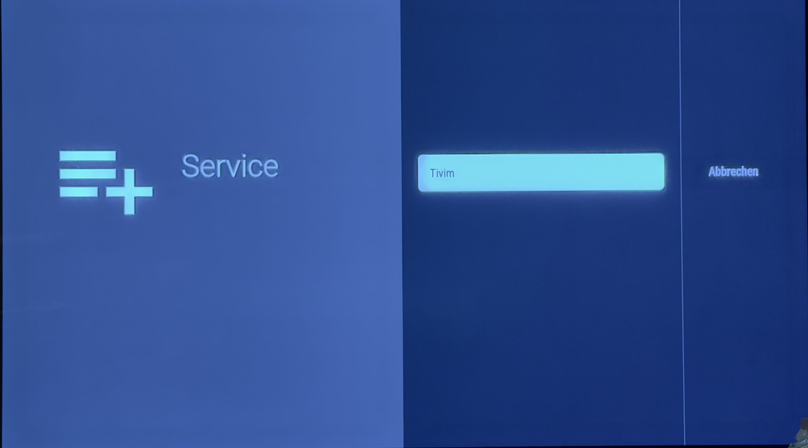
- Du siehst jetzt dieses Menü.
- Klicke auf das markierte Feld in der Mitte (wo in unserem Beispiel „Tivim“ steht) und gib hier deine Daten ein.
Schritt 22: Erfolgreich geladen!
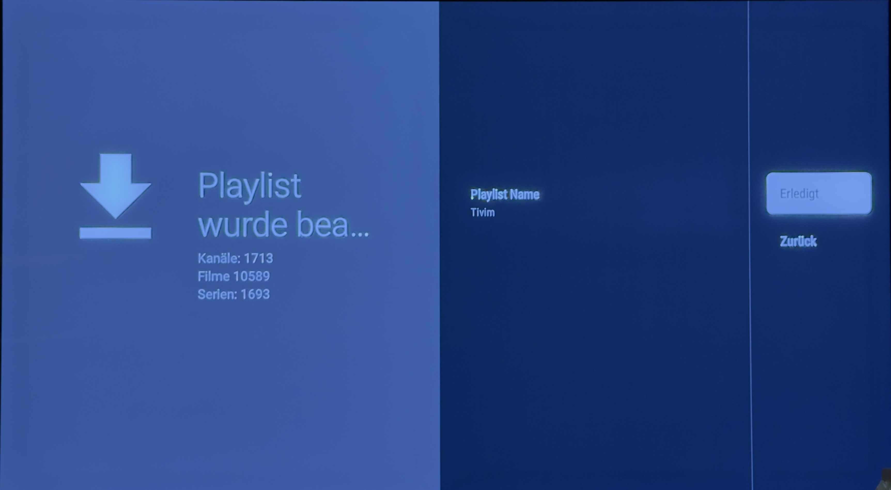
- Die App lädt jetzt deine Sender, Filme und Serien. Das dauert einen kurzen Moment.
- Sobald du die Zahlen auf dem Bildschirm siehst (wie im Bild), bist du fast fertig.
- Klicke auf der rechten Seite auf den Button Erledigt.
Schritt 23: Die Einstellungen öffnen
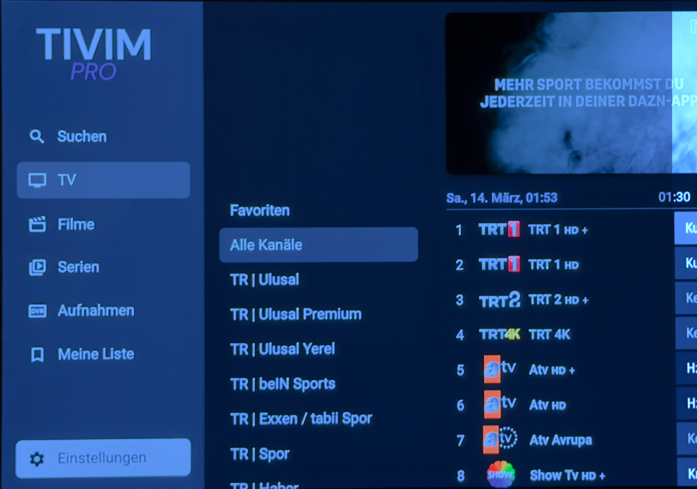
- Du bist jetzt im Hauptmenü von Tivim Pro.
- Bevor du loslegst, müssen wir noch eine winzige, aber sehr wichtige Einstellung vornehmen, damit alle Sender flüssig laufen.
- Navigiere auf der linken Seite ganz nach unten und klicke auf Einstellungen.
Schritt 24: Der finale Trick
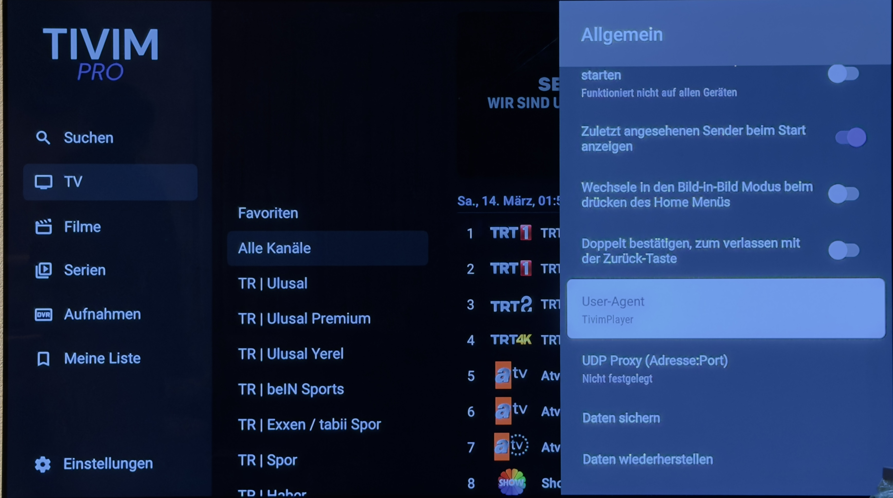
- Klicke in den Einstellungen auf den Bereich Allgemein (oder General).
- Scrolle nach unten, bis du den Punkt User-Agent findest, und klicke darauf.
- Es öffnet sich eine Tastatur. Tippe dort exakt dieses Wort ein (ohne Leerzeichen): TivimPlayer
- Klicke auf Speichern / OK.
Schritt 21: Einloggen & Erlauben
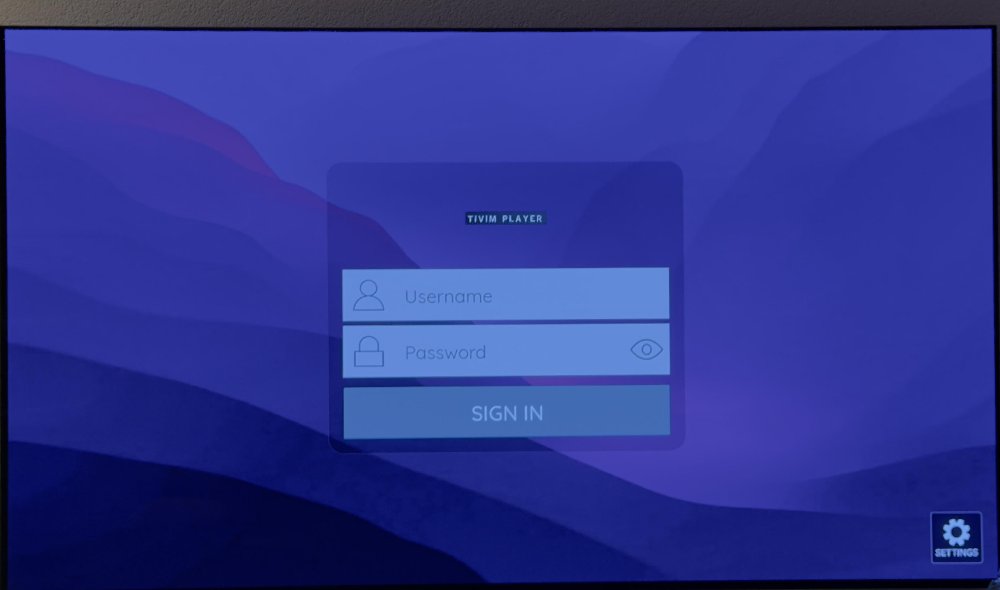
- Du bist jetzt in der Tivim-App! Gib hier deinen Benutzernamen und dein Passwort ein.
- Klicke danach auf Einloggen (oder Login).
- ACHTUNG, GANZ WICHTIG: Direkt nach dem Einloggen ploppt meistens ein Fenster auf, das dich fragt, ob die App auf Dateien/Medien zugreifen darf. Klicke hier UNBEDINGT auf ERLAUBEN! Klickst du auf Ablehnen, funktioniert die App nicht.
Vorbereitung: Platz schaffen!
- Bevor wir die neue Version installieren, müssen wir die alte löschen. Navigiere auf der Startseite ganz nach rechts oben zum Zahnrad-Symbol (Einstellungen).
- Wähle Apps und dann Alle Apps ansehen.
- Suche in der Liste nach deiner alten Tivim-App und klicke darauf.
- Wähle Deinstallieren und bestätige mit OK.
- Drücke danach wieder die Haus-Taste (Home), um zurück zur Startseite zu gehen. Du bist jetzt zu 100 % startklar!
Schritt 3: Welche Version möchtest du installieren?
App wählen
Schritt 1: Play Store öffnen
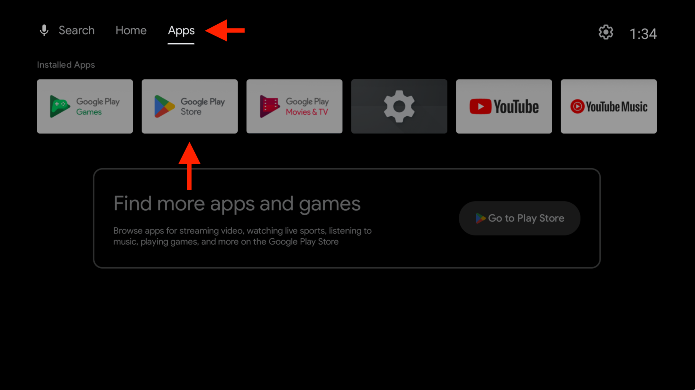
- Navigiere in deinem Google TV Menü oben auf den Reiter Apps.
- Klicke auf das Symbol für den Google Play Store. (Tipp: Manchmal verbirgt er sich auch unter "Meine Apps suchen".)
Schritt 2: Nach Downloader suchen
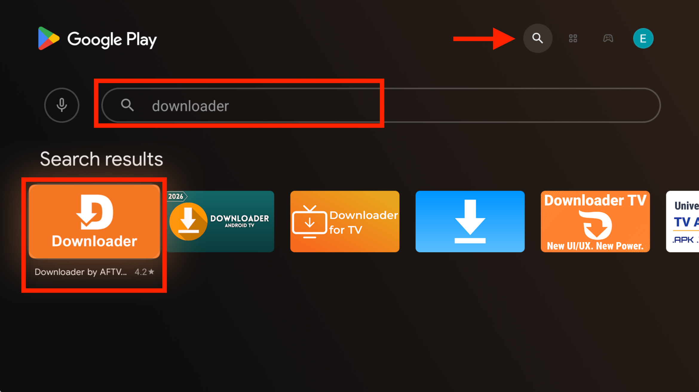
- Gehe im Play Store auf das Lupe-Symbol (Suchen).
- Tippe Downloader ein.
- Wähle die orangefarbene App mit dem weißen "D" auf orangefarbenem Hintergrund aus den Ergebnissen aus.
Schritt 3: App installieren
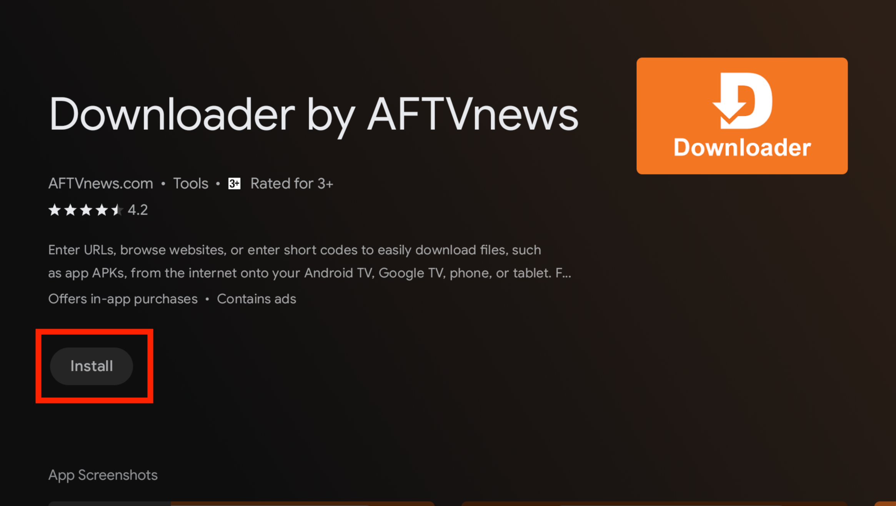
- Klicke auf den Button Installieren.
- Warte einen kurzen Moment, bis der Ladevorgang abgeschlossen ist.
- Klicke direkt danach auf Öffnen.
Schritt 12: Was siehst du jetzt?
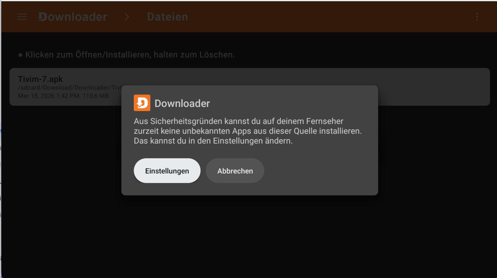
- Wenn der Download fertig ist, klicke im Downloader-Fenster auf "Installieren". Danach passiert eines von zwei Dingen.
- Fall A: Die App fragt dich direkt „Möchtest du diese App installieren?“ (Ein graues Fenster mit Installieren-Button erscheint).
- Fall B: Du siehst genau diese Sicherheitswarnung wie auf dem Bild.
Schritt 13: In die Einstellungen

- Du siehst nun diese Sicherheitswarnung auf deinem Bildschirm.
- Klicke auf den linken Button Einstellungen.
Schritt 14: Downloader zulassen
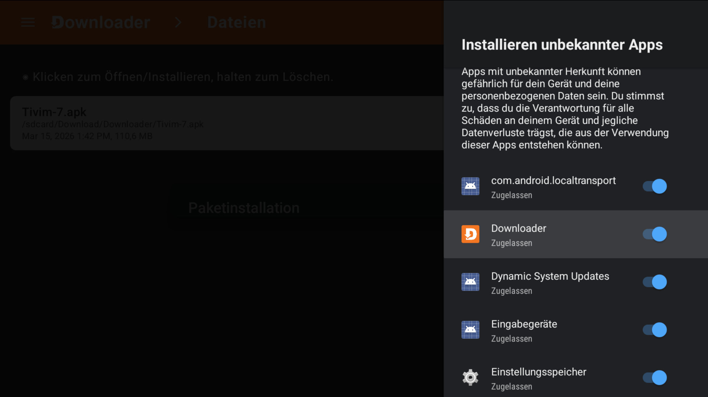
- Du landest im Menü „Installieren unbekannter Apps“.
- Navigiere nach unten bis zur App Downloader.
- Klicke einmal auf die OK-Taste, um den Schalter auf der rechten Seite zu aktivieren (er wird blau).
- Drücke danach 1-mal die Zurück-Taste auf deiner Fernbedienung.
Schritt 15: Die Installation
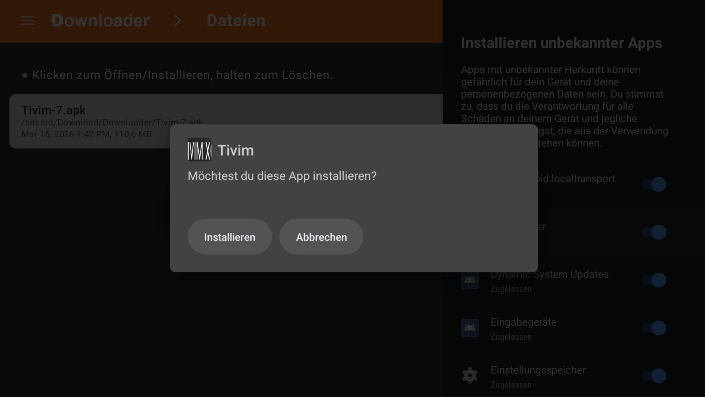
- Du bist wieder im Downloader und wirst jetzt gefragt: „Möchtest du diese App installieren?“.
- Klicke auf den Button Installieren.
Erfolgreich installiert!
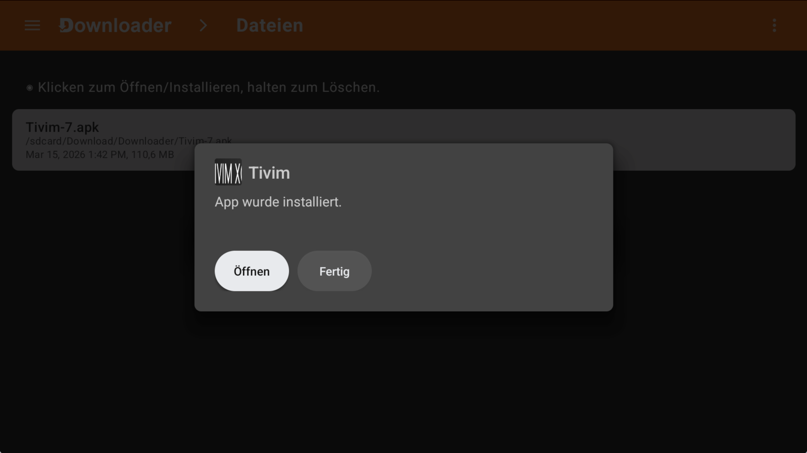
- Klicke auf deiner Fernbedienung auf Installieren und warte kurz.
- Sobald die Meldung „App wurde installiert“ erscheint, hast du es geschafft!
- Klicke jetzt auf Öffnen, um deine neue Tivim-App direkt zu starten.
Glückwunsch! Du hast es geschafft.
Tivim ist auf deinem Google TV installiert. Viel Spaß beim Streamen!